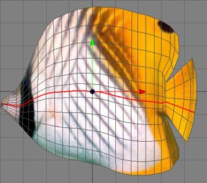

Ring Cut Tool
The ring cut tool is an excellent way to increase the detail of a mesh as you can see in the pictures below. The cut follows from polygon to polygon. If there are polygons with even number of edges the cut goes to the other side of the polygon. If the cut hits a polygon with an uneven number of edges the cut stops.

Modes
The ring cut tool can only be applied to raw polygon objects. It's behavior in point, edge and polygon mode is almost the same.


To perform a ring cut, just click on an edge of a polygon. The cut will then follow from polygon to polygon
If you don't release the mouse button after you've clicked on the edge, you can fine adjust the cut by dragging the mouse to the left or right. It is also possible to move the cut in and out by pressing the shift key whilst dragging.
Keys
- Shift : If you press the shift key while drag the mouse, the cut will be moved in or out along the normals of the surface.
Properties
- Select cut: When this property is checked, the newly created cut will be selected.